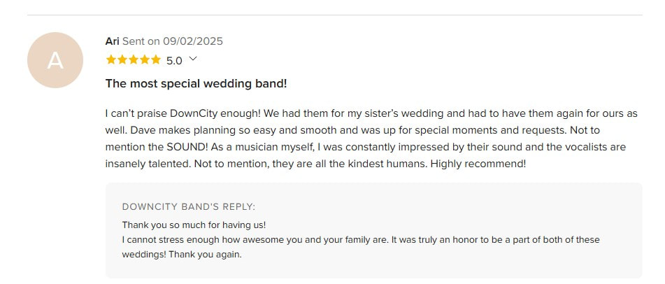
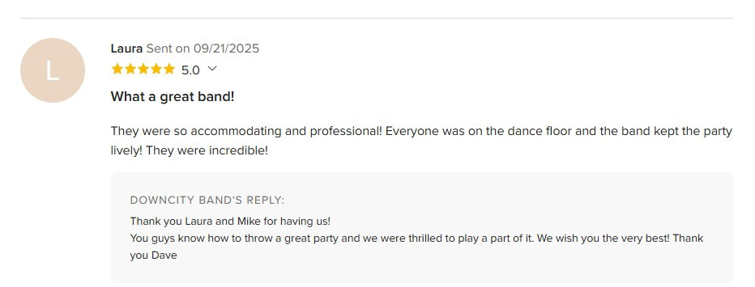
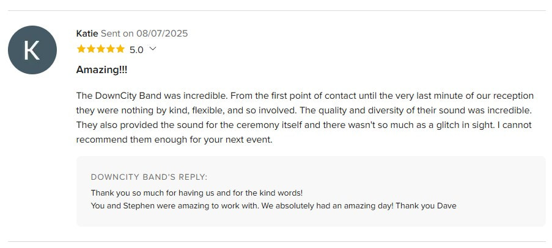
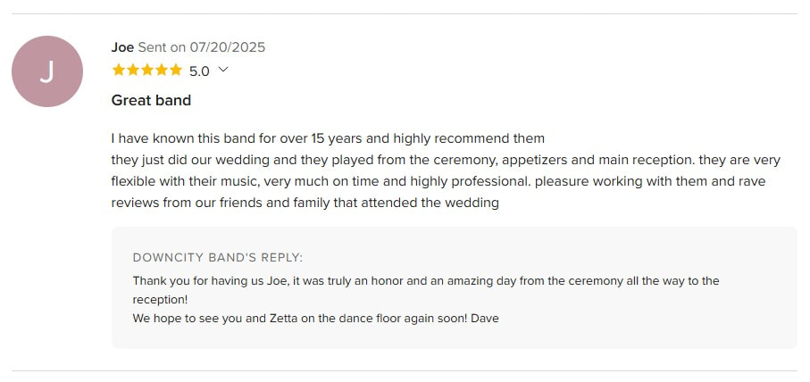
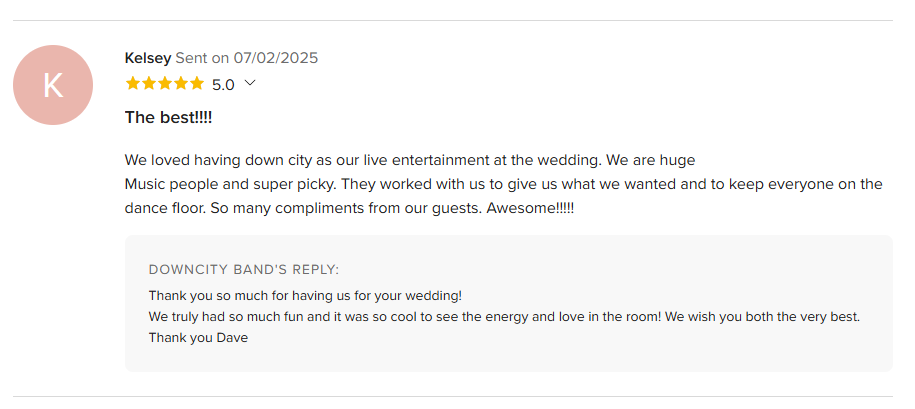
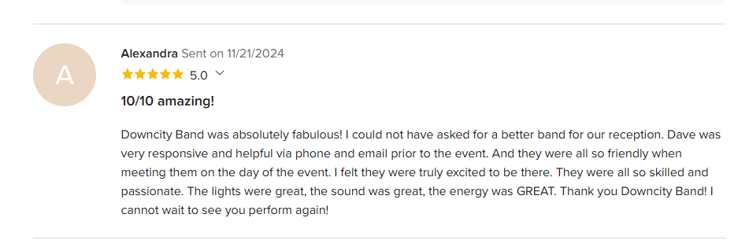
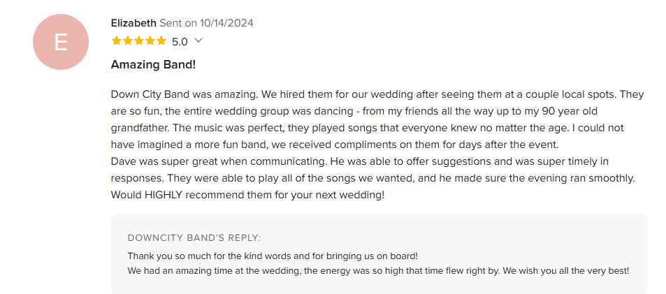
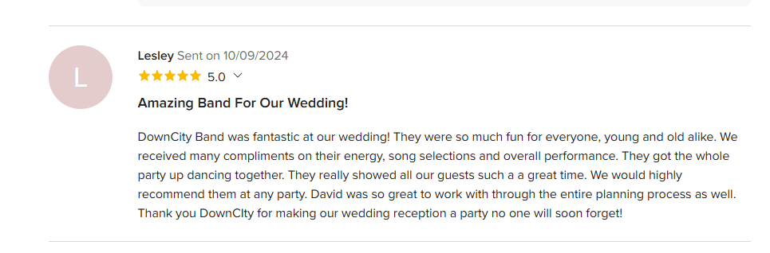
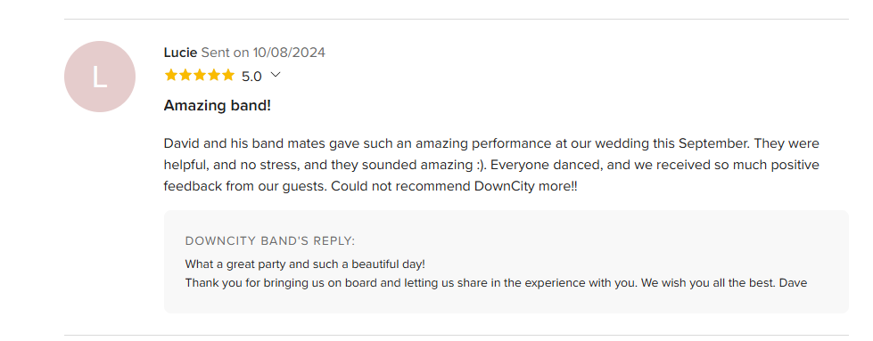

Client Testimonials
Read real reviews from couples and clients, or view us on WeddingWire & The Knot











Meghan H. - Sent on 09/16/2024
★ ★ ★ ★ ★ 5.0 Rating
Not only a great band, a true event partner!!
Dave and the whole band are amazing from the first email intro, to the last dance. They worked with me on a set list, learned a song that was very special to my fiance, and when my caterer totally messed up the timing of everything, they were there with me in the moment finding a solution. The band played songs everyone loved, and all of my guests are still raving about how wonderful they were! I cannot recommend Down City Band enough!! As I said, they were true partners with me at my wedding, and I am and will be, forever grateful to them for making my wedding so magical!!
Betsy K. - Sent on 10/17/2023
★ ★ ★ ★ ★ 5.0 Rating
Amazing Band!!
My wife and I hired DownCity Band simply because they were one of two bands on our venue’s Approved Vendors list. We looked them up on WeddingWire and saw their good reviews. All of that concern went out the window as soon as they played our entrance song! They were fantastic!! People were coming up to us all night saying how great the band was. The dance floor was packed all night long.
Lauren G. - Sent on 10/07/2023
★ ★ ★ ★ ★ 5.0 Rating
Best Wedding Band Ever!!!
Down City Band was the best wedding band!! We had such a positive and fun experience working with Dave and the band and couldn’t have asked for anything better. The band has such quality musicians, amazing talent, and such an extraordinary repertoire of talent that makes all the songs sound amazing!!
Eloise H. - Sent on 10/06/2023
★ ★ ★ ★ ★ 5.0 Rating
The best decision we made at our wedding
I looked around halfway through the night, and every single person at our wedding of about 130 people was on the dance floor. Downcity Band was incredible, from their energy, vocals to their instrumentals. They were so great to work with leading up to the wedding and also did an incredible job on our instrumental ceremony music.
Eva C. - Sent on 10/04/2023
★ ★ ★ ★ ★ 5.0 Rating
The best!
DownCity Band was AMAZING to work with. They were so great with communication leading up to the wedding which really put me at ease. And then at the wedding they were INCREDIBLE! Our guests have nonstop been talking about the music and how good they were. The dance floor was packed the entire night!
Beth W. - Sent on 09/26/2023
★ ★ ★ ★ ★ 5.0 Rating
Couldn't Suggest DownCity Band More!
I couldn't suggest DownCity Band more for your wedding or event!! While looking for wedding bands we went to see them play at a bar in RI and from the first song we were sold! Such great musicians/singers and so much fun energy! Dave was super helpful and great to work with while planning.
Mercedes W. - Sent on 07/09/2023
★ ★ ★ ★ ★ 5.0 Rating
DownCity Band
DownCity Band is an amazing band to hire for your wedding! They have an affordable package for your ceremony, cocktail hour, and reception. They also will learn any amount of specific songs that you’re interested in for first dances! Dave was a great communicator and awesome to work with.
Samantha G. - Sent on 06/05/2023
★ ★ ★ ★ ★ 5.0 Rating
Best band ever
Thank you so much to Down City Band for making our wedding the best night of our lives! They played the best music, kept everyone on the dance floor the entire night, and were so fun! We got so many compliments throughout the night about the band.
Elizabeth J. - Married on 12/10/2022
★ ★ ★ ★ ★ 5.0 Rating
Look no further!
The months prior to the wedding Dave was amazing to work with and answered any questions I had! At the wedding, DownCity showed out in every way! They prioritized playing songs we chose as 'must plays' and kept the party going! Their ability to interact with the guests is top notch.
Kelsey W. - Married on 10/15/2022
★ ★ ★ ★ ★ 5.0 Rating
Amazing Band!!!
DownCity was the perfect band for our wedding. They were very accommodating to all of our needs and had everyone dancing from the moment they started to the end of the night. I'd highly recommend them and their amazing, versatile group of musicians and singers.
Nate B. - Married on 09/10/2022
★ ★ ★ ★ ★ 5.0 Rating
Great vibe, great band!
Band was great. For a wedding you need people who have some life and charisma, which they have. They are flexible and do a good job playing off the crowd. Mixed in a good balance of classics along with more modern music. Would recommend them to anyone.
Gina M. - Married on 08/20/2022
★ ★ ★ ★ ★ 5.0 Rating
Highly recommend
I highly recommend DownCity Band. They were so great to work with and made sure they sang our 'must have' songs. If it was a song that they normally do not play, they took time to practice and perfect it. The entire band had such a positive energy!
Meghan P. - Married on 07/16/2022
★ ★ ★ ★ ★ 5.0 Rating
Best Wedding Band Ever!
Down City Band was absolutely perfect. Communication was easy and David was super responsive and helpful with any questions leading up to the day. Day of they showed up early to be sure everything was perfect. The dance floor was full ALL NIGHT.
Holly N. - Married on 07/31/2021
★ ★ ★ ★ ★ 5.0 Rating
Best band ever!
Dave and the band were the best! Dave was so helpful leading up to the event and they were a HUGE hit at the wedding! We are almost two months out since the wedding and I am still hearing from guests about how much they loved Down City Band!
Frances E. - Married on 07/30/2021
★ ★ ★ ★ ★ 5.0 Rating
Amazing experience with DownCity Band!
What a great band! David was incredibly responsive, supportive, and flexible in helping us to pivot. The reception was stellar and hands down to the singers for charging up the energy! We had an incredible time dancing the night away.
Matt C. - Married on 06/19/2021
★ ★ ★ ★ ★ 5.0 Rating
Downcity is the best wedding band in america
From the moment we heard DownCity we knew they were the only band wanted at our wedding. Dave and the band were always cautiously optimistic and extremely professional. In the end, the stars aligned and we got the non-stop dance party wedding we'd always dreamed of!
Evan M. - Married on 06/05/2021
★ ★ ★ ★ ★ 5.0 Rating
Incredible
We fell in love with Down City Band after seeing them perform in Newport! They were so helpful and responsive leading up to the wedding. They were willing to try new things and they knocked it out of the park with the songs we asked them to learn!
Jessica K. - Married on 10/10/2020
★ ★ ★ ★ ★ 5.0 Rating
Best Decision I Made!
Hiring the Down City Band was the best decision that I made for my wedding. They have an extensive song list and learned three songs for me that were not previously on it. They covered the ceremony music, cocktail music and dance music all with great talent!
Jennifer P. - Married on 09/12/2020
★ ★ ★ ★ ★ 5.0 Rating
Phenomenal Wedding Band
I cannot say enough good things about this band. They were absolutely amazing and so beyond our expectations for how great a wedding band could be!! If the band was playing, the dance floor was packed.
Pat B. - Married on 06/05/2020
★ ★ ★ ★ ★ 5.0 Rating
Have a Party with DownCity
If you want to create a party, DownCity Band delivers. They have it all: horns, strings, drums, vocals, choreography, enthusiasm... In terms of preparation, it was very easy to work with DownCity so no need to stress.
Andrew Bogus - Married on 10/05/2019
★ ★ ★ ★ ★ 5.0 Rating
Amazing band above and beyond our expectations!
Down City Band were absolutely amazing at our wedding! Dave was so easy to work with and really helped create our vision and the band was flexible and accommodating with our requests. They kept the energy up all night!
Elissa - Married on 09/20/2019
★ ★ ★ ★ ★ 5.0 Rating
Talented, professional, FUN!
DownCity Band was an absolute blast at our wedding! They were so accommodating and TALENTED, we have received numerous compliments from our wedding guests, and we had the best time on the dance floor.
Annie-Laurie Hogan - Married on 09/07/2019
★ ★ ★ ★ ★ 5.0 Rating
Fun, energetic band!
Terrific band for a wedding. My guests had a great time dancing. The band manager is very responsive and the band is willing to learn new songs as requested. I would definitely recommend Down City!
Ethan - Married on 08/09/2019
★ ★ ★ ★ ★ 5.0 Rating
High Energy and Fun Wedding Band!
We were so glad to have chosen DownCity Band for our wedding. They kept our entire guest list dancing the entire time and played a great mix of new/old/and top 40 songs that everyone would be happy with!
DownCity Band's Reply: Thank you so much, it was a wonderful ceremony, cocktail and reception! We truly appreciate you both for having us take part of it all.
Aly Puzzo - Married on 06/15/2019
★ ★ ★ ★ ★ 5.0 Rating
Professional, talented and an absolute blast!
Our guests raved about Down City Band!! Each member was fun, talented and professional. Our dance floor was packed the entire night. Dave was incredibly easy to communicate with throughout the planning process.
DownCity Band's Reply: Thank you Aly and Congratulations again to you and Steve! We had such a great time with you and your guests. - Dave
Kate Farrell - Married on 06/14/2019
★ ★ ★ ★ ★ 5.0 Rating
Hire this band!
DownCity band was so much fun!! They really got everyone up and having fun at our wedding. Good mix of old and current songs but all great for dancing. Dave was also great to work with - super responsive.
DownCity Band's Reply: Thank you so much Kate! You were an absolute pleasure to work with. Congratulations again! - Dave